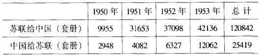
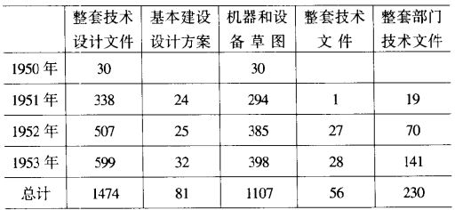

五、提供技术资料
对于中国经济建设必不可少的科学技术资料，苏联主要是通过两种途径提供的，即图书资料交换和项目或设备进口合同。
在1949年索菲亚经互会第二次会议上，确定了经互会成员国之间无偿交换科学技术资料的原则。中国虽不是经互会成员国，但苏联比照这一原则，以图书交换的方式向中国提供了大量科技情报和文献。通过苏联科学院图书馆、科学技术情报研究所、社会科学基础图书馆与中国相应单位之间的交换，苏联提供了大量基础性科技情报材料、图书和杂志。1950年9月29日，苏联科学院主席团下达指示，责成苏联科学院图书馆“重新审察1951年国际图书交换计划，目的是大大增加给人民民主国家科学机关的寄书量，其中要特别重视同中华人民共和国的图书交流”，指示还提出“同人民民主国家进行图书交换，不要求他们数量相等”。在1952年通过的决定中规定，从1953年起按照不对等原则向人民民主国家每年多寄25%的科学书籍。因此，苏联科学院图书馆提高了给中国的寄书量（见表六）。1953年，接受苏联科学出版物的中国机关达到300个，其中有31个大型图书馆。
表六 中苏图书资料交换情况

涉及援建工程或中国特别要求的具体项目和设备的技术资料，是通过双方外贸进出口公司提供给中国的。对于苏联提供的科学技术文件，中方实际上只需付移交材料的成本费和复印费，即使这点费用也不是每每收齐。而1953年5月15日签订的中苏经济合作协定则第一次以独立条款的形式确定了无偿向中国提供技术文件的原则。对于中方提出的要求苏联总是能够及时给予满足。如为了配合第一个五年计划的编制工作，周恩来致信莫洛托夫，希望苏联政府继续向中国提供以下方面的技术资料：苏联现行的工业产品标准，即国家标准、全苏标准、暂行技术条件及各企业的制造规格；建设矿山、工厂、学校、医院的典型设计；工业及交通企业的技术操作规程；机器制造图纸和先进企业的原材料、电力、燃料消耗的技术经济定额等。两天以后，莫洛托夫便答复同意满足中方的要求。
从1950-1953年，苏联根据中苏两国政府间科学技术协定向中国提供科学文献和技术资料共2928套（件），具体情况如表七所示：
表七 苏联向中国提供的科学文献和技术资料
